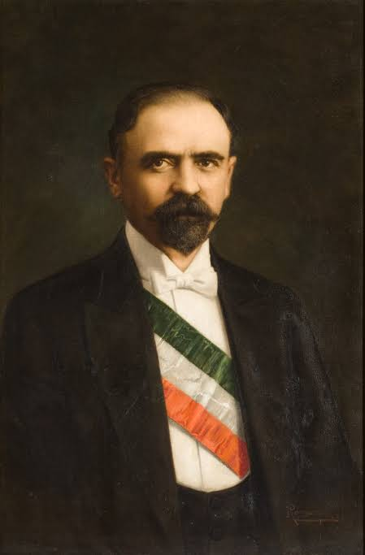

Francisco I Madero
Francisco I. Madero fue un empresario y político mexicano.
Su proclamación en contra del gobierno de Porfirio Díaz suele considerarse como el evento que inició la Revolución mexicana de 1910. Durante este conflicto, Madero fue elegido
presidente de México, cargo que ejerció desde el 6 de noviembre de 1911.
